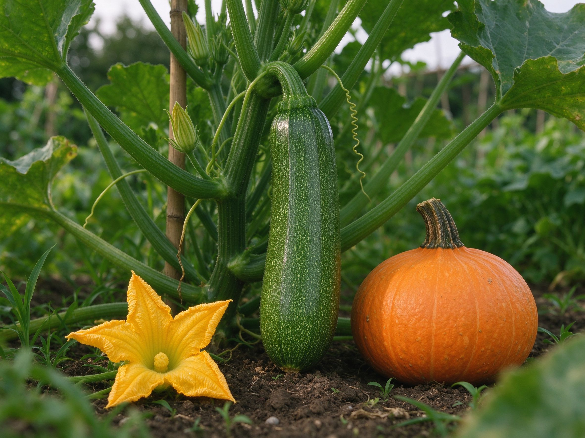

How to Grow Summer and Winter Squash
Squash is one of the most rewarding garden crops — a single plant can feed a family. Here's how to grow both fast summer squash and long-keeping winter squash at home.
Summer vs. Winter Squash
Summer squash (zucchini, yellow crookneck) is harvested young and eaten fresh. Winter squash (butternut, acorn, pumpkin) is left to mature and stores for months. Both grow from large seeds in warm soil.
Planting
Plant seeds 1 inch deep after the last frost, in full sun and rich, well-drained soil. Space summer squash 24 inches apart and winter squash 36-48 inches apart — they sprawl. For small spaces, grow them on a sturdy trellis.
Watering
Give squash about 1 inch of water per week, at the base in the morning. Consistent moisture is key — irregular watering causes blossom end rot. Mulch heavily to keep soil warm and moist.
Harvesting
Pick summer squash when young (6-8 inches) for the best texture. Harvest regularly to keep plants producing. Leave winter squash on the vine until the skin is hard and the stem dries; cure in the sun, then store cool and dry.
Ready for more? Try our tomato guide or the composting guide to feed your squash organically.